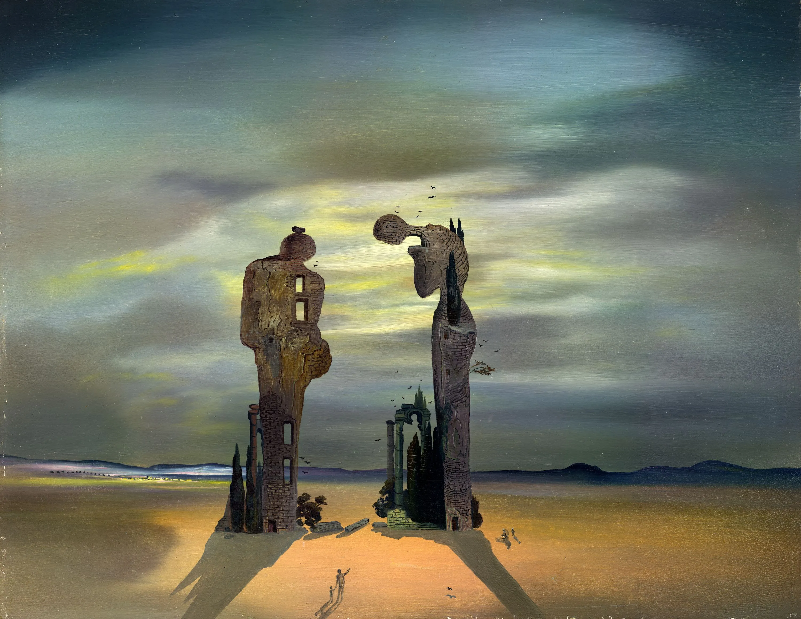
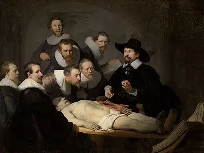

Cada post-it y cada cuadro del TP se convirtió en un elemento concreto de la jugabilidad.
Sacerdote
Rol del juez. El único que decide a quién salvar cada semana.
Enfermedad terminal
Rol grupal. Casi todos son enfermos terminales del hospicio.
lluvia
Ambientación. Cae animada de fondo en la pantalla de inicio.

Rembrandt — La lección de anatomía (1632)
Composición visual. Mesa, círculo, ojos sobre el enfermo.
✦ ✦ ✦
El Poseído
un juego de empatía e intuición
Entre los enfermos terminales se esconde un poseído. El sacerdote tiene dos meses para purgarlo sin caer en su trampa.
✦ ✦ ✦

Salvador Dalí — Reminiscencia arqueológica del Ángelus de Millet (1935)
La Estatuilla. La figura inclinada del cuadro: habilidad del sacerdote para saltear una semana en reverencia.
inteligencia
Arma del sacerdote. Lo único que lo separa de la derrota.
comparación
busca →
falta de empatía
Mecánica central del bluff. El sacerdote compara cartas y justificaciones.
2 meses para irme
Presión del tiempo. Las rondas se llaman semanas.